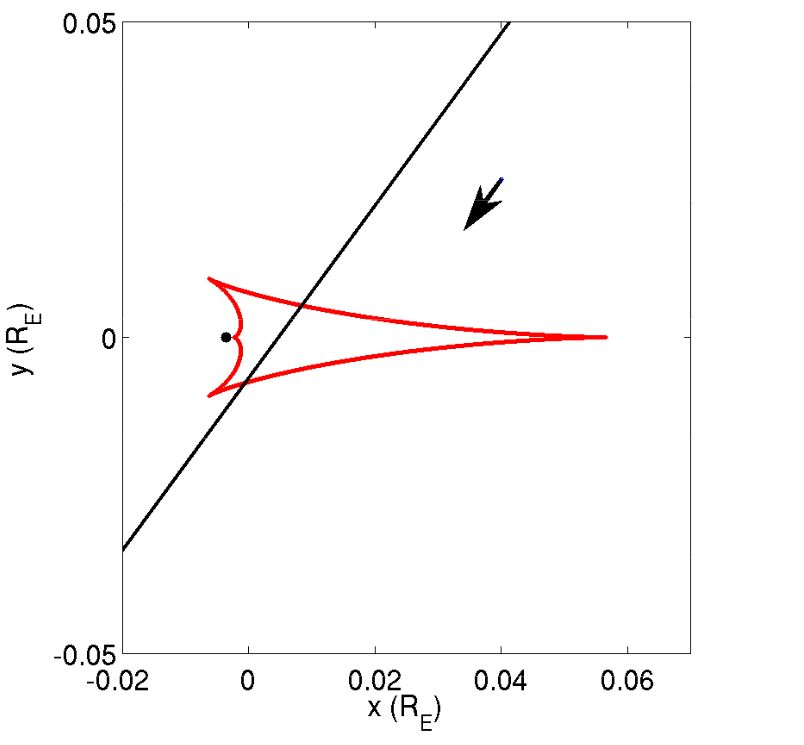

The following animation shows what happens when a source crosses into a caustic (aka a caustic entrance):
PICTURE::FILENAME=caustic_entrance.gif::CAPTION=Caustic entrance::CREDIT=Jennifer Yee::NAME=Caustic entranceThere is a sharp jump in magnification when the source crosses into the caustic (red). Once inside the caustic, the magnification declines but always stays above the level outside the caustic.
A caustic exit is the inverse of a caustic entrance: the magnification increases as the source approaches the caustic, then drops abruptly when the source crosses outside the caustic.
PICTURE::FILENAME=caustic_exit.gif::CAPTION=Caustic exit::CREDIT=Jennifer Yee::NAME=Caustic exitBecause the caustic is a closed curve, there will always be two caustic crossings: an entrance and an exit. The figure below shows the magnification curve for a source crossing the caustic of a binary star lens. Can you identify the caustic entrance and the caustic exit in the light curve?
The caustic structure is often used as a kind of short-hand for the full magnification map because the features of the magnification map can be inferred from the caustic structure. Recall that a cusp is one of the points of the caustic. The animation below shows how the magnification is increased near the cusps.
MOVIE::FILENAME=Jennifer_Yee__map_animation_cropped.gif::CAPTION=Magnification map and caustic::CREDIT=Jennifer Yee::NAME=Magnification map and caustic animationA source passing near a cusp can produce a magnified signal without actually crossing the caustic directly:
PICTURE::FILENAME=caustic_cusp.gif::CAPTION=Caustic cusp::CREDIT=Jennifer Yee::NAME=Caustic cuspNotice the single peak and rounded form of the cusp approach. A cusp crossing may also appear to be a single peak if the distance between the cusps is smaller than the diameter of the source. In that case, the caustic entrance and exit merge, producing a single peak but with sharp, rather than smooth shoulders.
At a caustic, the mathematical solution to the lens equation gives infinite magnification, but infinite magnification is never observed in practice. Why?
When evaluating the lens equation, we get infinite magnification if we assume the source is a point source, meaning that it is a mathematical point with zero size. In reality, the sources are stars, which have a physical size and therefore a finite extent. The observed magnification of the source is smeared out by the face of the source. If you wear glasses, this is similar to how things appear blurry if there is a smudge on the glasses. In practice we calculate the magnification of a source by integrating the magnification pattern across the face of the source.
The animation below compares a caustic entrance for a point source (dotted line) to a source with radius 0.01.
MOVIE::FILENAME=Jennifer_Yee__fs_effects.gif::CAPTION=The effects of a finite source on caustics::CREDIT=Jennifer Yee::NAME=Effects of a finite source on causticsIf you are familiar with transiting planet lightcurves, this effect is directly analogous to the points of first and second contact for a transit. The images below show a caustic entrance and the first and second points of contact and a caustic exit and the third and fourth points of contact.
| PICTURE::FILENAME=pts_of_contact_0.png::CAPTION=Points of contact with a caustic::CREDIT=Jennifer Yee::NAME=Points of contact with a caustic | PICTURE::FILENAME=pts_of_contact_1.png::CAPTION=Points of contact with a caustic::CREDIT=Jennifer Yee::NAME=Points of contact with a caustic |
Match the following planetary light curves to their caustics and trajectories.
| 1 | 2 | 3 | 4 | 5 |
| PICTURE::FILENAME=OGLE-2007-BLG-368L_Lightcurve.JPG::CAPTION=Lightcurve 1::CREDIT=Jennifer Yee::NAME=Lightcurve 1 | PICTURE::FILENAME=OGLE-2014-BLG-0676L_Lightcurve.JPG::CAPTION=Lightcurve 2::CREDIT=Jennifer Yee::NAME=Lightcurve 2 | PICTURE::FILENAME=MOA-2011-BLG-293L_Lightcurve.JPG::CAPTION=Lightcurve 3::CREDIT=Jennifer Yee::NAME=Lightcurve 3 | PICTURE::FILENAME=MOA-2010-BLG-477L_Lightcurve.JPG::CAPTION=Lightcurve 4::CREDIT=Jennifer Yee::NAME=Lightcurve 4 | PICTURE::FILENAME=MOA-2009-BLG-319L_Lightcurve.JPG::CAPTION=Lightcurve 5::CREDIT=Jennifer Yee::NAME=Lightcurve 5 |
| A | B | C | D | E |
| PICTURE::FILENAME=MOA-2009-BLG-319L_Caustic.JPG::CAPTION=Caustic A::CREDIT=Jennifer Yee::NAME=Caustic A | PICTURE::FILENAME=OGLE-2014-BLG-0676L_Caustic.JPG::CAPTION=Caustic B::CREDIT=Jennifer Yee::NAME=Caustic B  | PICTURE::FILENAME=OGLE-2007-BLG-368L_Caustic.JPG::CAPTION=Caustic C::CREDIT=Jennifer Yee::NAME=Caustic C | PICTURE::FILENAME=MOA-2010-BLG-477L_Caustic.JPG::CAPTION=Caustic D::CREDIT=Jennifer Yee::NAME=Caustic D | PICTURE::FILENAME=MOA-2011-BLG-293L_Caustic.JPG::CAPTION=Caustic E::CREDIT=Jennifer Yee::NAME=Caustic E |